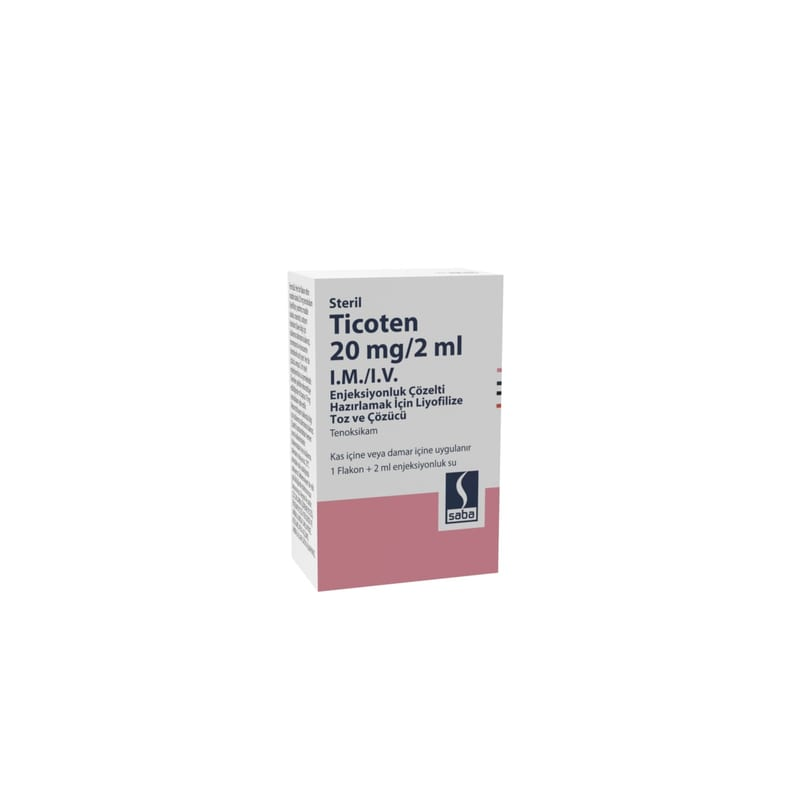

Ticoten 20 mg/2 ml I.M./I.V. Enjeksiyonluk Çözelti Hazırlamak İçin Liyofilize Toz Ve Çözücü, 1 Adet

Ne için kullanılır
KT · Bölüm 1 TİCOTEN etkin madde olarak her flakonda 20 mg tenoksikam içerir. TİCOTEN sarı-yeşil renkli yabancı partikül içermeyen, kek kütle halinde liyofilize tozdur. 20 mg tozu içeren renksiz flakonlarda ve çözücü olarak 2 mL’lik enjeksiyonluk steril su içeren ampullerde kullanıma sunulmaktadır. TİCOTEN’in etkin maddesi tenoksikam antiinflamatuvar (iltihap giderici) ve antiromatizmal (romatizmal hastalıkların tedavisinde) etkili non steroid antiinflamatuvar (NSAİ) olarak adlandırılan bir ilaç grubuna dahildir. TİCOTEN, kireçlenme (osteoartrit), eklemlerde ağrı ve şekil bozukluğuna neden olan romatoid artrit hastalığı ve sırt eklemlerinde sertleşme ile seyreden ağrılı ilerleyici bir romatizmal hastalık olan ankilozan spondilitin belirti ve bulgularının tedavisi ile damla hastalığı (akut gut artriti), akut kas iskelet sistemi ağrıları, ameliyat sonrası ağrı ve ağrılı adet tedavisinde etkilidir.